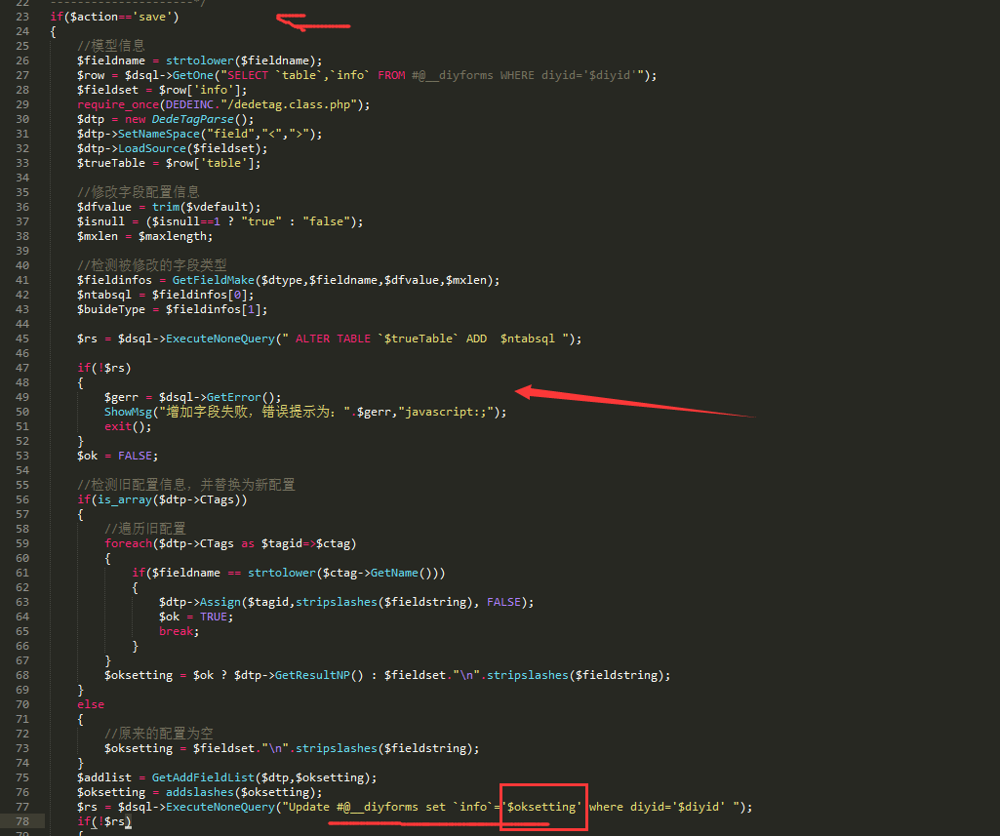
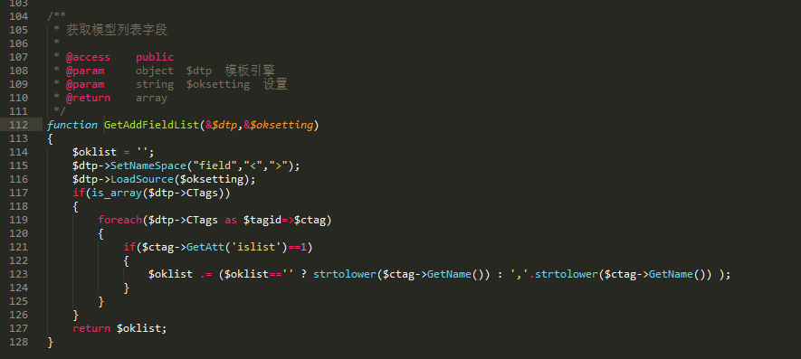

第一处（Failed）
基本原理是语句写入 inc 文件中，然后包含进来。
漏洞分析
首先，我们需要找到一个写文件的地方，我的理解 inc 文件是对include file 的缩写，所以如果能够控制写入的这个文件内容，一般能够找到include它的地方。
注意，下面提到的操作需要先以管理员身份登录后台。
找到一个写入inc文件的地方，可以知道，这里控制了LoadSource的输入即可控制写入的文件内容并且算得文件名。
/uploads/include/dedetag.class.php

找到调用的地方。

可以看到有很多地方调用了。
比如这个，/uploads/dede/diy_field_add.php
从数据表中取diyforms的info列数据直接作为LoadSource的输入。那么，只要我们控制info列的数据即可。
找一个insert或者update需要控制的info列的地方。

/uploads/dede/diy_field_add.php

OK，看看如何控制$oksetting。
容易看出$oksetting到73行是很容易控制的。
跟进去GetAddFieldList。
/uploads/dede/inc/inc_admin_channel.php

可以看到，这里调用了LoadSource，这正是我们一开始想要调用的，然后，我们就晕了？不对，在这里调用也是可以的，而且比较方便了，我们可以不经过数据库，直接写入文件。Great！
继续，可以看到并没有修改$oksetting 的值。可以选择写入数据库，然后调用我们一开始查看的调用地方。方便起见，我们直接这里写入文件了。
看看需要怎样的路径到达这里。
/uploads/dede/diy_field_add.php

需要这SQL语句不报错，由于表名是来自于前面的SQL语句，而默认是没有这个表名的。
所以，在此之前我们要添加一个表名。
这个是在添加表单处添加的。
找找看

发现insert的地方。
/uploads/dede/diy_add.php

很容易构造，或者直接进后台找自定义表单的地方也行。
访问如下链接即可
1 | http://mydedecms.com/dede/diy_add.php?action=add&diyid=1&table=dede_diyform1&listtemplate=hello1&viewtemplate=hello2&posttemplate=hello3 |
这时，已经在数据库中添加表单了。
然后访问
1 | http://mydedecms.com/dede/diy_field_add.php?action=save&diyid=1&fieldstring=<%3fphp+phpinfo()%3bdie()%3b%3f>&itemname=123&fieldname=field1&isnull=1&spage=no&dtype=text&vdefault=dfaultvalue1&maxlength=250&vinnertext=1011 |
此时已经写入文件啦
访问这个查看源代码可以看到
http://mydedecms.com/data/tplcache/3bbbc6355901b72ef182102cf99114b8.inc
OK，接下来找找include的地方
uploads/include/dedetag.class.php

居然include 的不是我们写入的文件。
那我们看看这个文件是怎么写入的。

额，貌似没有可乘之机。
可惜，应该先确定能include进来才对的。Orz。
POC/EXP
第二处（Failed）
基本原理是语句写入 inc 文件中，然后包含进来。
漏洞分析
POC/EXP
参考
https://cve.mitre.org/cgi-bin/cvename.cgi?name=CVE-2018-9175